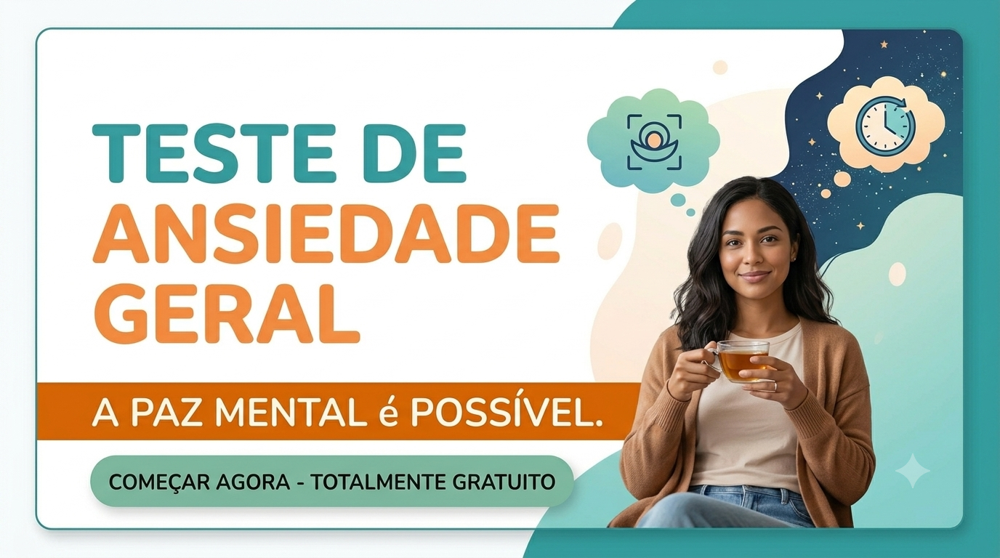
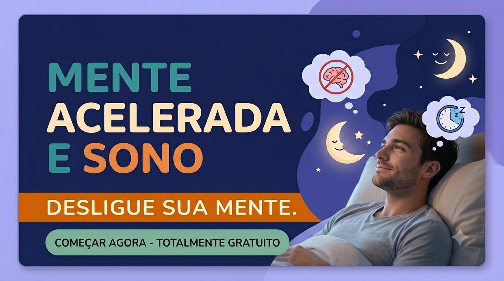
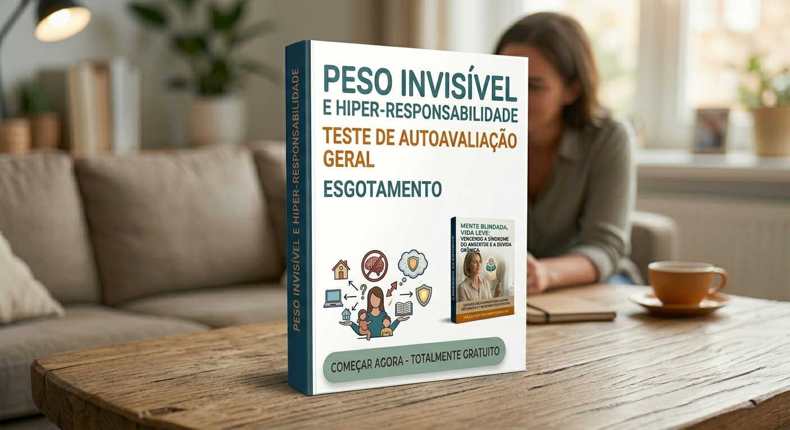
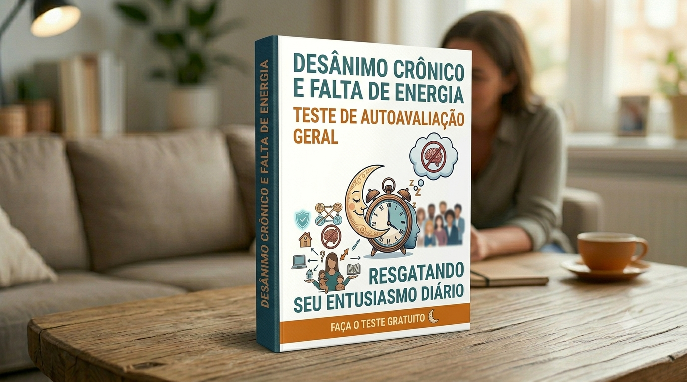

Painel Gratuito de Autoavaliação Veja Urgente como Você esta
Descubra suas travas comportamentais clicando diretamente sobre o teste desejado.
💝 Avaliações Online — Escolha um tema abaixo:

1. Teste do Crítico Interno

2. Sensibilidade Emocional

3. Teste de Procrastinação

4. Sobrecarga de Estímulos

5. Esgotamento Mental

6. Estresse Familiar

7. Síndrome do Impostor

8. Ansiedade do Futuro

9. Dependência de Aprovação

10. Peso Invisível e Hiper-Responsabilidade

11. Cicatrizes Emocionais e Bloqueios

12. Desânimo Crônico e Falta de Energia

13. Gestão de Energia vs. Tempo

14. Síndrome do Salvador (Cargas Alheias)